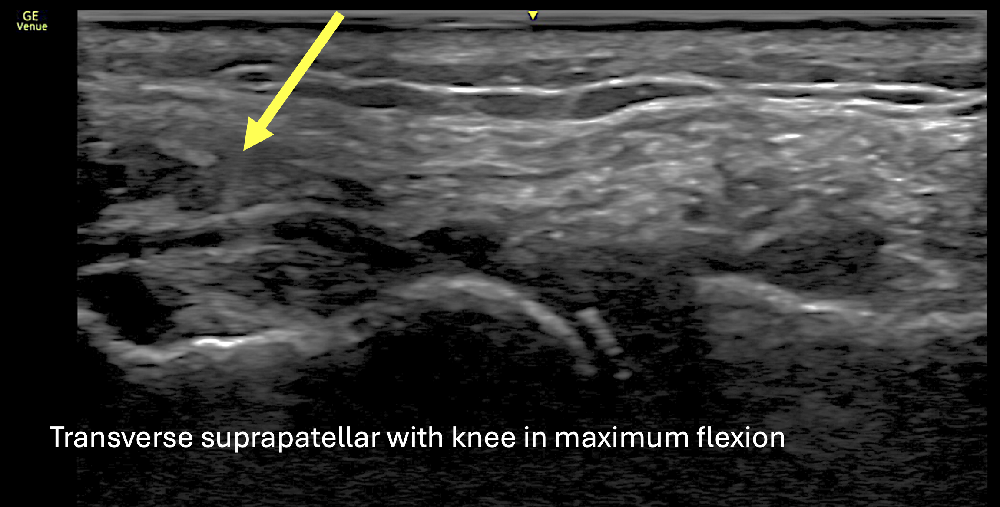

Case 1. Gout in the knee. Easy
38-year-old white male presenting with 3 weeks of left knee pain.
He first injured this knee while running 10 years ago and nearly recovered with physiotherapy but has experienced intermittent episodes of left knee pain and swelling for the past 5 years, often occurring every few months and sometimes triggered by camping, increased alcohol intake, or red meat; he has never had classic podagra.
Over the past 3 weeks, he has developed an acute flare of left knee pain with warmth, swelling, and limited range of motion due to pain and effusion, though symptoms have improved with Celebrex. He occasionally experiences mild right knee discomfort.
He is otherwise well, with no inflammatory back pain, dactylitis, uveitis or constitutional symptoms.
He is healthy, takes no long-term medications, works as a software engineer, jogs intermittently, does not smoke, uses cannabis occasionally, drinks about two servings of alcohol per week and lives with his wife and 18-month-old daughter.
Q1. What symptoms would you inquire about in this case keeping in mind the most likely diagnosis? Check all correct answers.
On physical examination, patient was afebrile, heart rate is 89, BP 136/80, BMI is 28. He appeared well with normal gait. Examination of the cardiopulmonary system as unremarkable. Musculoskeletal examination reveals bilateral knee effusion and warmth, larger on the left. Tenderness along the medial and lateral joint lines on the left. No focal tenderness along the quadriceps, infrapatellar or Achilles insertion. No skin rashes or tophi.
Bedside ultrasound of the bilateral knees are demonstrated below:



Q2. What is the finding indicated by the yellow arrow?
Q3. What investigations are more likely to aid in confirming the diagnosis?
Investigations reveal a uric acid level of 559 umol/L, CRP of 18 mg/L, negative RF, anti-CCP and HLA-B*27. Fluid analysis from arthrocentesis of the left knee reveals 5966 absolute WBC count (mostly neutrophils and monocytes), 2000 RBC and negative culture. The synovial fluid sample was examined under polarized light microscopy and needle-shaped, negatively birefringent crystals were visualized, consistent with monosodium urate crystals.
Q4. What is your final diagnosis?
In light of the subacute non-traumatic onset, dietary triggers for the knee pain/swelling, improvement of symptoms after 3 weeks despite no targeted immunosuppression, seronegative status, high uric acid and the finding of double contour on the bedside ultrasound, this patient is most likely to have an oligo-articular flare of gout confirmed on synovial fluid analysis.